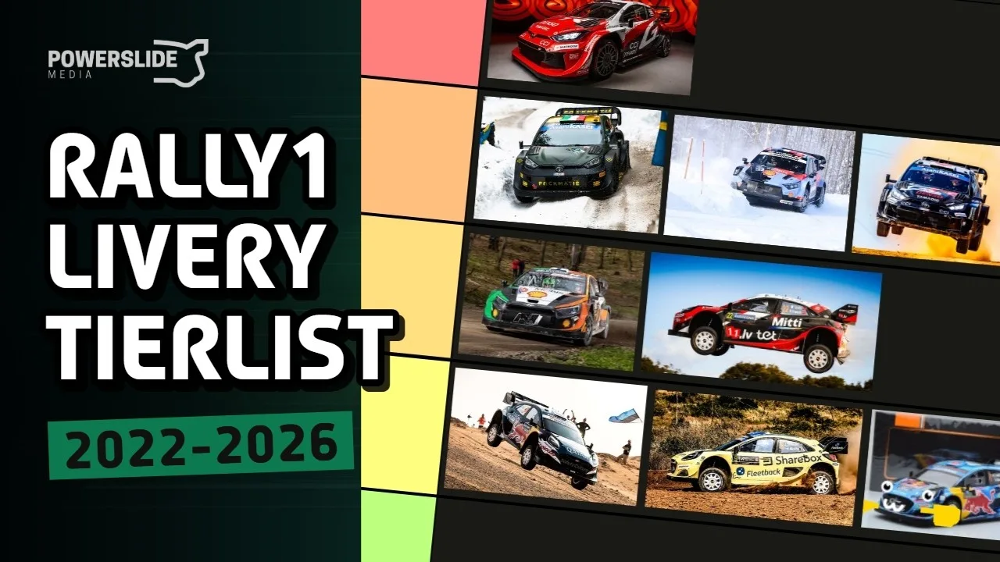

Ranking Every Rally1 Era Livery
With the end of the Rally1 era, at least in its current form, we take a look back at every livery featured on the Ford Puma, Toyota GR Yaris and Hyundai i20 N Rally1 cars from 2022 to the present day. In this special episode of the Powerslide Podcast, Dimitris, Hugo and Silver are joined by Manos to rank every WRC Rally1 livery, along with a few extra ones!
You can also create your own tier list below! A massive thank you to Aiden for putting it together.
Make sure to share your creations and tag us in your posts!
Comments